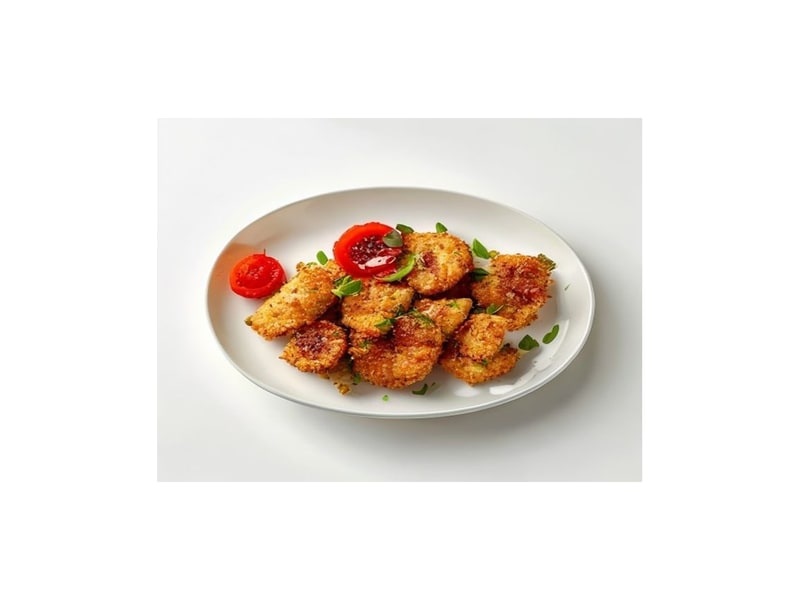

Polskie obiadki
Kotlet de volaille
Kotlet de volaille: 18 g białka, 220 kcal, 12 g węglowodanów i 11 g tłuszczu na 100 g. Kategoria: Polskie obiadki.
Kalorie220 kcalna 100 g
Białko / proteiny18 g
Węglowodany12 g
Tłuszcz11 g
Cena (szac.)~1,55 złza 100 g
Ceny zaktualizowano: maj 2026 (szacunek — ceny w popularnych supermarketach)
Porcja: sztuka (180g)
| Kalorie | 396 kcal |
|---|---|
| Białko | 32.4 g |
| Węglowodany | 21.6 g |
| Tłuszcz | 19.8 g |
| Cena (szac.) | ~2,79 zł |
Szczegółowe składniki odżywcze na 100 g
| Wartość energetyczna (kalorie) | 220 kcal |
|---|---|
| Białko (proteiny) | 18 g |
| Węglowodany | 12 g |
| Tłuszcz | 11 g |
| Tłuszcze nasycone | 3 g |
| Tłuszcze nienasycone | 8 g |
| Witaminy i minerały | Żelazo, Tiamina (B1), Potas |
| Współczynnik kcal / 1 g białka | 12.2 |
| Cena produktu (szac. za 100 g) | ~1,55 zł |
| Cena za 100 g białka (szac.) | ~8,61 zł |